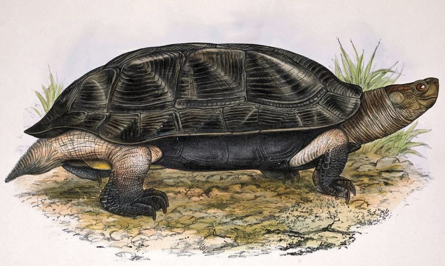

इंडियन ब्लैक कछुआIndian Black Turtle
Melanochelys trijuga · Geoemydidae · REP-0048

- Scientific name वैज्ञानिक नाम
- Melanochelys trijuga (Schweigger, 1812)
- Family कुल
- Geoemydidae
- Hindi हिंदी
- इंडियन ब्लैक कछुआ
- Local names स्थानीय नाम
- indian black turtle, kala kachhua, talab kachhua, black pond terrapin
- Status here यहाँ की स्थिति
- native
- Movement आवागमन
- Resident, here all year
- Known from कहाँ दर्ज
- Others have published records from the wider Awadh–Purvanchal plain, none yet from Basti–Ayodhya अवध–पूर्वांचल से दूसरों के प्रकाशित अभिलेख, बस्ती–अयोध्या से अभी नहीं
- IUCN IUCN
- not evaluated
- Review समीक्षा
- not yet reviewed
When to look कब देखें
Present all year. साल भर मौजूद।
Tell it apart from इनसे अलग पहचानें
इंडियन ब्लैक कछुआ / Indian Black Turtle
Melanochelys trijuga (Schweigger, 1812) — Geoemydidae
इंडियन ब्लैक कछुआ — यह अवध के गांव के पोखरों, तालों और नहरों में पाया जाने वाला एक मध्यम आकार का जलीय कछुआ है। इसका ऊपरी खोल गहरा भूरा या काला होता है जिस पर तीन धारियां होती हैं जो उम्र के साथ हल्की पड़ जाती हैं। इसके पैर झिल्लीदार होते हैं और सिर के किनारों पर पीले या गुलाबी धब्बे पाए जाते हैं। यह पानी में तैरने के साथ-साथ बरसात की रातों में जमीन पर भी लंबी दूरी तय करता है।
Quick Identification त्वरित पहचान
| Feature | Description |
|---|---|
| Carapace shape | Moderately depressed, elongated oval; dark brown to black in adults |
| Dorsal ridges | Three distinct keels present in juveniles and young adults, becoming subdued with maturity |
| Plastron | Large, unhinged, dark brown or black with a distinct yellow lateral margin (Smith 1931) |
| Head markings | Grey-brown to black, adorned with irregular yellow, orange, or pinkish spots on the temples |
| Limbs & Digits | Strong webbed swimming digits armed with sharp curved claws |
| Habit | Semi-aquatic freshwater terrapin; frequently seen basking on logs or wandering overland on damp nights |
Field tip: Check the muddy margins of village talabs (pokhra) and reed beds in early morning, or search grassy lanes after heavy monsoon cloudbursts.
हिंदी: इसका खोल काला या गहरा कत्थई होता है और निचला खोल किनारों पर पीला होता है। इसके सिर के दोनों तरफ पीले या गुलाबी छींटे होते हैं और पैर झिल्लीदार होते हैं।
Morphology आकारिकी
Biometrics as given by Smith (1931):
| Measurement | Value | Source |
|---|---|---|
| Carapace length | 335 mm (subspecies indopeninsularis, Chota Nagpur and north Bengal) | Smith (1931) |
| Carapace width | 230 mm (same) | Smith (1931) |
The carapace is oblong-ovate, moderately elevated in profile, with slightly flaring marginal scutes in older individuals. The three longitudinal keels consist of a continuous median vertebral ridge and two parallel costal ridges. The plastron is large, truncating anteriorly and distinctly notched posteriorly. The bridge connecting carapace and plastron is long and stout. The head is moderate in size, with an obtusely pointed snout projecting slightly beyond the lower jaw. The digits are fully webbed to the bases of the claws, with broad transverse scales lining the forelimbs (Tikader & Sharma 1985). The skin of the head is smooth, divided into fine polygonal plates posteriorly.
हिंदी: इसका ऊपरी खोल अंडाकार और मजबूत होता है। शरीर के नीचे का खोल लंबा और कड़ा होता है। पैरों में उंगलियों के बीच तैरने वाला पर्दा अच्छी तरह विकसित होता है जिससे यह पानी में तेजी से तैरती है।
Behaviour & Ecology व्यवहार और पारिस्थितिकी
This turtle is highly adaptable, inhabiting a diverse array of lentic and lotic freshwater ecosystems, from perennial oxbow lakes (jheels) and village temple tanks to slow-flowing drainage canals and inundated paddy fields. Although primarily aquatic, it possesses a well-documented propensity for overland terrestrial movements. During warm rainy monsoon nights, individuals leave drying ponds to trek hundreds of meters across agricultural fields and pastures to locate permanent waterbodies. It is primarily crepuscular and nocturnal in its foraging activity, spending bright midday hours basking on partially submerged logs, floating reed rafts, or muddy banks.
हिंदी: यह कछुआ तालाबों और पोखरों में रहता है लेकिन बरसात की रातों में जमीन पर भी लंबा सफर तय करता है। दिन में यह लकड़ी के लट्ठों या कीचड़ पर धूप सेकता है और रात में भोजन तलाशता है।
Life Cycle / Phenology जीवन चक्र
Breeding occurs across a broad seasonal window extending from August to February depending on rainfall patterns. Nesting is conducted primarily along elevated, well-drained earthen bunds, sandy ditch banks, or orchard edges adjoining village tanks. The female excavates a flask-shaped nesting cavity using her hindlimbs and deposits a clutch of 3 to 10 hard-shelled, elongated white eggs (Tikader & Sharma 1985). Depending on ambient temperatures, incubation requires 60 to 90 days (Tikader & Sharma 1985). Emerging hatchlings possess sharply defined three-keeled carapaces and vivid facial spots, dispersing directly into wetland shallows.
हिंदी: अगस्त से फरवरी के बीच मादा तालाब के ऊंचे किनारों पर जमीन खोदकर 3 से 10 सफेद अंडे देती है। लगभग दो से तीन महीने में अंडों से बच्चे निकलकर पानी की ओर चले जाते हैं।
Host Plants or Prey आहार
The species is a generalist omnivore and vital aquatic scavenger. It consumes a wide variety of submerged aquatic macrophytes (Hydrilla verticillata, Vallisneria spiralis), water lily stems, and fallen rotting fruits such as Mango (Mangifera indica) dropping into village ponds. Its animal diet comprises freshwater snails (Bellamya, Pila), aquatic bivalves, insect larvae, tadpoles, small fish, and animal carrion. By clearing dead organic matter from village ponds, it plays an important role in preserving water quality.
हिंदी: यह एक सर्वाहारी कछुआ है जो तालाब की जलीय घास, कमल के तने, पानी में गिरे सड़े फल, घोंघे, मरी हुई मछलियां और अन्य सड़े-गले जैविक पदार्थों को खाकर पानी को साफ रखता है।
Predators / Natural Enemies शत्रु
Adult turtles are well protected by their dense bony shell, but occasionally fall prey to the Indian Python (Python molurus) and large muggers (Crocodylus palustris). Nests and hatchlings suffer heavy predation from the golden jackal (Canis aureus), wild pigs (Sus scrofa), monitor lizards like the Bengal Monitor (Varanus bengalensis), and opportunistic raptors such as the Black Kite (Milvus migrans). Stray village dogs also destroy nesting females.
हिंदी: अजगर और मगरमच्छ बड़े कछुओं को निगल सकते हैं। सियार, कुत्ते और गोह इनके अंडों को खोदकर खा जाते हैं और चील इनके नन्हे बच्चों का शिकार करती है।
Agricultural / Human Relevance कृषि प्रासंगिकता
In the agrarian landscape of eastern Uttar Pradesh, this turtle serves as an essential biological cleaner of community tanks and irrigation reservoirs, preventing water fouling by consuming decaying vegetation, fish carcasses, and nuisance freshwater snails that transmit parasitic flukes to livestock. It causes no agricultural damage. It is protected under the Wildlife (Protection) Act 1972, though traditional pond maintenance occasionally exposes individuals to incidental capture.
हिंदी: यह गांव के पोखरों को साफ रखने वाला एक महत्वपूर्ण सफाईकर्मी है। यह मवेशियों में बीमारी फैलाने वाले घोंघों को खाता है। यह वन्यजीव संरक्षण कानून के तहत पूरी तरह संरक्षित है।
Expected Locally स्थानीय रूप से अपेक्षित
Not a field record. Written from published accounts for eastern Uttar Pradesh. No confirmed local sighting yet — if you have seen it, that is what the atlas needs.
अभी तक स्थानीय पुष्टि नहीं। यह विवरण प्रकाशित स्रोतों से है, किसी अवलोकन से नहीं।
In Basti and Ayodhya districts, optimal search localities include perennial wetlands such as Bakhira Tal, oxbow lakes along the Manorama and Kuwana rivers, and ancient temple ponds with emergent aquatic vegetation. Dawn surveys focused on floating logs or nocturnal searches along flooded road margins during monsoon downpours offer the best opportunities. GBIF holds published records from the wider Awadh–Purvanchal plain, none yet from Basti–Ayodhya. A first confirmed record requires a photograph showing the dark three-keeled shell, yellow plastron border, and spotted temples submitted to the atlas platform.
Distribution वितरण
Global range: Widespread across the Indian subcontinent and adjacent regions, including India, Pakistan, Bangladesh, Sri Lanka, Nepal, and Myanmar.
In India: Distributed through peninsular India, the Western Ghats, central states, and the northern Gangetic plain eastward to Assam.
In Uttar Pradesh: Recorded across various river basins, oxbow lakes, and wetland complexes throughout central and eastern districts.
In Basti district / eastern UP: Expected in perennial village ponds, tals, and oxbow marshes across the Kuwana and Ghaghara drainage basins.
हिंदी: यह भारत, पाकिस्तान, बांग्लादेश और श्रीलंका में बहुत बड़े पैमाने पर पाई जाती है। उत्तर प्रदेश के तालाबों, झीलों और कछारी नमभूमियों में इसका विस्तार आम है।
Research Questions शोध प्रश्न
- What environmental triggers initiate overland dispersal between drying village ponds during the monsoon? / बरसात में एक तालाब से दूसरे तालाब में जाने के लिए इस कछुए को कौन से मौसमी संकेत प्रेरित करते हैं?
- How does the presence of invasive water hyacinth (Eichhornia crassipes) affect basking frequency and foraging success? / जलकुंभी के घने फैलाव से इसके धूप सेकने और शिकार करने पर क्या असर पड़ता है?
- What is the survival rate of nests laid along artificial agricultural bunds compared to natural riverine berms?
- How do road crossings during night rains influence adult mortality across rural eastern Uttar Pradesh highways?
- Can village pond caretakers participate in protecting nesting sites on communal tank bunds? / क्या ग्रामीण तालाबों की मेड़ों पर कछुओं के अंडों को बचाने में मदद कर सकते हैं?
Similar Species मिलती-जुलती प्रजातियाँ
| Species | How to tell apart | हिंदी | |
|---|---|---|---|
| Black Pond Turtle \ | Geoclemys hamiltonii | Jet-black carapace with 3 yellow nodular keels; head is black with dense, rounded bright yellow spots all over (Smith 1931) | ब्लैक पॉन्ड कछुए की पीठ पर पीले गांठदार उभार होते हैं और इसके पूरे सिर पर पीले गोल धब्बे भरे होते हैं |
| Crowned River Turtle \ | Hardella thurjii | Large river turtle with broad orange-red temporal stripes, strongly denticulated jaws, and massive adult size (Smith 1931) | क्राउन्ड रिवर कछुआ बहुत बड़ा होता है, इसके सिर पर नारंगी धारियां होती हैं और इसके जबड़े दांतेदार होते हैं |
| Indian Flapshell Turtle \ | Lissemys punctata | Softshell turtle with leathery shell rim, soft skin covering carapace, and distinctive femoral cutaneous flaps on plastron | भारतीय फ्लैपशेल कछुआ एक नरम खोल वाला कछुआ होता है जिसकी पीठ चमड़े जैसी होती है |
Field rule: Semi-aquatic hard-shelled blackish turtle with webbed feet, yellow-bordered dark plastron, and yellowish-pink spots on the temples.
हिंदी: गहरे काले-भूरे खोल वाला जलीय कछुआ जिसके निचले खोल के किनारे पीले होते हैं और सिर के दोनों तरफ रंगीन धब्बे होते हैं।
Taxonomy & Classification वर्गीकरण
Original description. Schweigger (1812), Prodromus monographiae Cheloniorum, Königsberger Archiv für Naturwissenschaft und Mathematik, 1, p. 310; type locality: "India orientali" (East Indies).
Subspecies. Multiple subspecies are recognized; the northern Gangetic populations correspond to Melanochelys trijuga indopeninsularis (Annandale, 1913).
Family and order placement. Placed in the genus Melanochelys Gray, 1869, family Geoemydidae, suborder Cryptodira, order Testudines.
Phylogenetic notes. Exhibits extensive morphological variation across South Asia, with northern continental forms attaining much larger adult dimensions than peninsular and island races.
IUCN status rationale. Not evaluated by the IUCN Red List; widely distributed and ecologically adaptable across natural and artificial wetlands of South Asia.
हिंदी: इसका पहला वैज्ञानिक विवरण ऑगस्ट श्वाइगर ने 1812 में लिखा था। गंगा के मैदानों की आबादी को इंडोपेनिनसुलारिस उपप्रजाति माना जाता है।
Photo Gallery फोटो गैलरी
No photos yet — add field photos to media/species/indian_black_turtle/ and run node scripts/sync_photos.js.
Photos needed आवश्यक फोटो
- [ ] Habitat view showing typical local microhabitat (प्राकृतिक वास का विस्तृत परिदृश्य)
- [ ] Dorsal view showing oblong carapace with three distinct longitudinal ridges (ऊपरी खोल की तीन धारियों का दृश्य)
- [ ] Close-up of head showing spotted temple markings (सिर और कनपटी के रंगीन धब्बों का क्लोज-अप दृश्य)
- [ ] Ventral view of plastron illustrating yellow lateral border (निचले खोल के पीले किनारों का दृश्य)
References संदर्भ
- Original description: Schweigger, 1812 — see GBIF.
- Smith, M. A. (1931). The Fauna of British India, Including Ceylon and Burma. Reptilia and Amphibia. Vol. I.—Loricata, Testudines. Taylor and Francis, London.
- Tikader, B. K. & Sharma, R. C. (1985). Handbook: Indian Testudines. Zoological Survey of India, Calcutta.
- GBIF Occurrence Data — Melanochelys trijuga, India (2025).
Source file: species/fauna/reptiles/indian_black_turtle.md